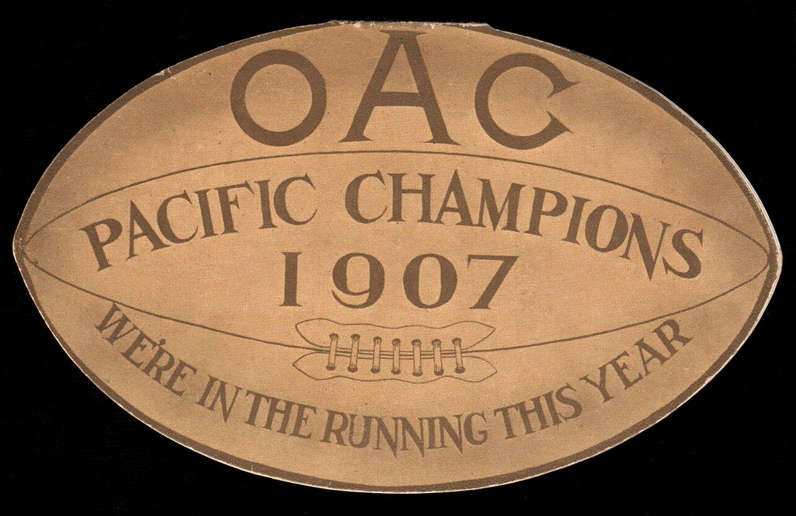

The 1907 Oregon Agricultural Aggies football team represented Oregon Agricultural College (now known as Oregon State University) as an independent during the 1907 college football season.
In their second season under head coach Fred Norcross, the Aggies compiled a perfect 6–0 record, did not allow any of their opponents to score, and outscored their opponents by a combined total of 137 to 0. The Aggies' victories included games against Oregon (4–0), Pacific University (49–0), and Willamette (42–0).[1]
| Team | WIN | LOSE | TIE | WIN | LOSE | TIE |
| Oregon Agricultural | - | 6 | 0 | 0 | ||
| New Mexico A&M | - | 3 | 0 | 0 | ||
| New Mexico | - | 1 | 0 | 0 | ||
| Washington State | - | 7 | 1 | 0 | ||
| Colorado Mines | - | 5 | 1 | 0 | ||
| Oregon | - | 5 | 1 | 0 | ||
| USC | - | 5 | 1 | 0 | ||
| Utah Agricultural | - | 5 | 1 | 0 | ||
| Montana | - | 4 | 1 | 1 | ||
| Utah | - | 4 | 2 | 0 | ||
| Wyoming | - | 2 | 1 | 0 | ||
| Washington | - | 4 | 4 | 2 | ||
| October 19 | Astoria | W 27–0 | ||
| October 25 | Whitworth | W 6–0 | ||
| November 2 | Pacific University | W 49–0 | ||
| November 9 | at Oregon | W 4–0 | ||
| November 16 | Willamette | W 42–0 | ||
| November 28 | at St. Vincent College | W 10–0 |

Conference |
Independent |
Record |
6-0 |
Head coach |
Fred Norcross (2nd season) |
Captain |
Leonard Darby |